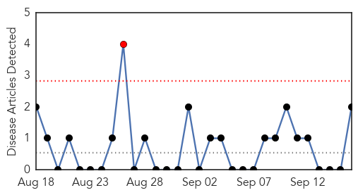
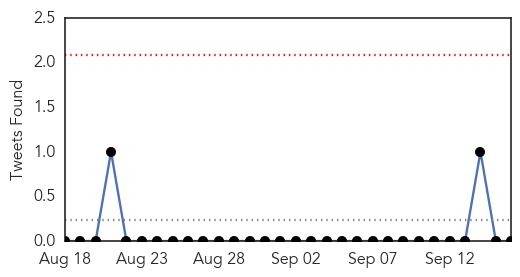
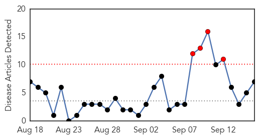

Swine Flu
30-Day Web Trend
1 alerts, 0 warnings

30-Day Twitter Trend
0 alerts, 0 warnings

Article Locations
Article Confidences

Top Articles:
Top Tweets:
-
No tweets found for Sep 16, 2014
Influenza
30-Day Web Trend
4 alerts, 0 warnings

30-Day Twitter Trend
0 alerts, 0 warnings

Article Locations

Article Confidences
Top Articles:
- 0.998
- Hygiene best defense as virus spreads
- 0.994
- Enterovirus D68 not found in Morgan County hospitals
- 0.970
- Women & Children’s Hospital opens overflow unit to handle high number of children with respiratory illness
- 0.964
- MDA Offers Flu Shots to Those Affected by Muscle Disease
- 0.959
- Vaccine clinics gearing up for flu season
- 0.936
- Vaccinations to be required for students and toddlers
- 0.515
- InDevR Wins Barda Contract for Cutting-Edge Influenza Diagnostic
Top Tweets:
- 0.598
- Is the influenza vaccine safe for cystic fibrosis patients? http://t.co/vYsH8sWak2 via flu